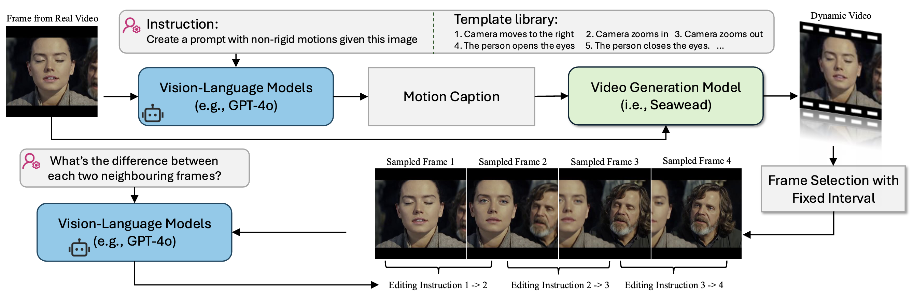
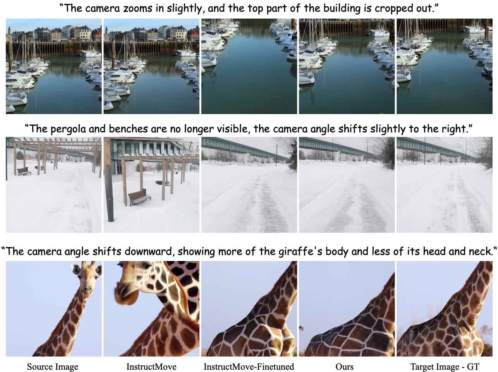

ByteMorph: Benchmarking Instruction-Guided Image Editing with Non-Rigid Motions
Abstract
Editing images with instructions to reflect non-rigid motions—camera viewpoint shifts, object deformations, human articulations, and complex interactions—poses a challenging yet underexplored problem in computer vision. Existing approaches and datasets predominantly focus on static scenes or rigid transformations, limiting their capacity to handle expressive edits involving dynamic motion. To address this gap, we introduce , a comprehensive framework for instruction-based image editing with an emphasis on non-rigid motions. comprises a large-scale dataset, , and a strong baseline model built upon the Diffusion Transformer (DiT), named . includes over 6 million high-resolution image editing pairs for training, along with a carefully curated evaluation benchmark . Both capture a wide variety of non-rigid motion types across diverse environments, human figures, and object categories. The dataset is constructed using motion-guided data generation, layered compositing techniques, and automated captioning to ensure diversity, realism, and semantic coherence. We further conduct a comprehensive evaluation of recent instruction-based image editing methods from both academic and commercial domains. The benchmark is available here.
Main Contributions
- We introduce , a unified framework for expressive and instruction-based image editing encompassing non-rigid motions.
- We present and , a large-scale dataset and a comprehensive benchmark, with high-quality image pairs for training and evaluation, addressing various dynamic editing scenarios, including camera motion, object transformation, human articulation, and human-object interaction.
- With the proposed dataset, we finetune , a DiT-based model specifically developed for instruction-guided, motion-centric image editing, setting a baseline for performance on non-rigid motion editing tasks.
ByteMorph Dataset Construction
Our methodology leverages video generation models to produce natural and coherent transitions between source and target images, ensuring edits are both realistic and motion-consistent. Overview of Synthetic Data Construction. Given a source frame extracted from the real video, our pipeline proceeds in three steps. a) A Vision-Language Model (VLM) creates a Motion Caption from the instruction template database to animate the given frame. b) This caption guides a video generation model Seaweed to create a natural transformation. c) We sampled frames uniformly from the generated dynamic videos with a fixed interval and treated each pair of neighbouring frames as an image editing pair. We re-captioned the editing instruction by the same VLM, as well as the general description of each sampled frame (not shown in the figure).
Leaderboard
We run each method four times and report the average value. In addition to CLIP similarity metrics, we use Claude-3.7-Sonnet to evaluate the overall editing quality (VLM-Score). We also ask human participants to evaluate the instruction-following quality (Human-Eval-FL) and identity-preserving quality (Human-Eval-ID).
Benchmarking Open-Sourced Models
| Category | Method | CLIP-SIMtxt↑ | CLIP-Dtxt↑ | CLIP-SIMimg↑ | CLIP-Dimg↑ | VLM-Eval↑ |
|---|---|---|---|---|---|---|
| Camera Zoom | InstructPix2Pix | 0.270 | 0.021 | 0.737 | 0.266 | 42.37 |
| MagicBrush | 0.311 | 0.002 | 0.907 | 0.202 | 49.37 | |
| UltraEdit (SD3) | 0.299 | 0.000 | 0.864 | 0.249 | 54.74 | |
| AnySD | 0.309 | 0.001 | 0.911 | 0.182 | 40.92 | |
| InstrcutMove | 0.283 | 0.027 | 0.821 | 0.294 | 70.66 | |
| OminiControl | 0.251 | 0.022 | 0.722 | 0.300 | 45.79 | |
| †InstrcutMove | 0.301 | 0.045 | 0.846 | 0.425 | 82.29 | |
| †OminiControl | 0.310 | 0.039 | 0.801 | 0.414 | 74.15 | |
| †ByteMorpher (Ours) | 0.301 | 0.048 | 0.847 | 0.463 | 84.08 | |
| GT | 0.317 | 0.075 | 0.890 | 1.000 | 87.11 | |
| Camera Move | InstructPix2Pix | 0.318 | 0.010 | 0.709 | 0.200 | 32.20 |
| MagicBrush | 0.317 | 0.009 | 0.913 | 0.195 | 52.63 | |
| UltraEdit (SD3) | 0.306 | 0.012 | 0.885 | 0.240 | 59.01 | |
| AnySD | 0.318 | 0.010 | 0.909 | 0.200 | 49.37 | |
| InstrcutMove | 0.305 | 0.016 | 0.862 | 0.291 | 74.86 | |
| OminiControl | 0.243 | 0.022 | 0.687 | 0.243 | 16.71 | |
| †InstrcutMove | 0.304 | 0.027 | 0.883 | 0.412 | 82.53 | |
| †OminiControl | 0.298 | 0.025 | 0.891 | 0.304 | 79.26 | |
| †ByteMorpher (Ours) | 0.319 | 0.041 | 0.894 | 0.426 | 84.18 | |
| GT | 0.320 | 0.039 | 0.915 | 1.000 | 86.37 | |
| Object Motion | InstructPix2Pix | 0.299 | 0.026 | 0.789 | 0.257 | 36.47 |
| MagicBrush | 0.328 | 0.007 | 0.901 | 0.163 | 47.49 | |
| UltraEdit (SD3) | 0.324 | 0.012 | 0.887 | 0.237 | 62.13 | |
| AnySD | 0.319 | 0.008 | 0.879 | 0.189 | 48.31 | |
| InstrcutMove | 0.325 | 0.015 | 0.870 | 0.318 | 72.44 | |
| OminiControl | 0.279 | 0.023 | 0.753 | 0.270 | 34.11 | |
| †InstrcutMove | 0.328 | 0.043 | 0.891 | 0.481 | 87.97 | |
| †OminiControl | 0.330 | 0.036 | 0.892 | 0.470 | 86.48 | |
| †ByteMorpher (Ours) | 0.332 | 0.044 | 0.896 | 0.472 | 89.07 | |
| GT | 0.335 | 0.056 | 0.919 | 1.000 | 89.53 | |
| Human Motion | InstructPix2Pix | 0.248 | 0.012 | 0.694 | 0.211 | 23.60 |
| MagicBrush | 0.317 | 0.001 | 0.911 | 0.146 | 46.27 | |
| UltraEdit (SD3) | 0.313 | 0.011 | 0.900 | 0.195 | 50.64 | |
| AnySD | 0.312 | 0.003 | 0.894 | 0.156 | 38.12 | |
| InstrcutMove | 0.308 | 0.013 | 0.861 | 0.278 | 69.43 | |
| OminiControl | 0.230 | 0.018 | 0.660 | 0.229 | 25.18 | |
| †InstrcutMove | 0.314 | 0.023 | 0.901 | 0.442 | 84.70 | |
| †OminiControl | 0.311 | 0.016 | 0.880 | 0.399 | 80.78 | |
| †ByteMorpher (Ours) | 0.316 | 0.022 | 0.899 | 0.440 | 85.66 | |
| GT | 0.321 | 0.031 | 0.922 | 1.000 | 86.10 | |
| Interaction | InstructPix2Pix | 0.271 | 0.020 | 0.732 | 0.263 | 31.29 |
| MagicBrush | 0.317 | 0.004 | 0.914 | 0.167 | 39.98 | |
| UltraEdit (SD3) | 0.314 | 0.018 | 0.892 | 0.226 | 52.24 | |
| AnySD | 0.315 | 0.005 | 0.909 | 0.173 | 37.23 | |
| InstrcutMove | 0.309 | 0.019 | 0.855 | 0.318 | 67.07 | |
| OminiControl | 0.258 | 0.021 | 0.689 | 0.265 | 32.99 | |
| †InstrcutMove | 0.314 | 0.043 | 0.885 | 0.477 | 85.83 | |
| †OminiControl | 0.295 | 0.041 | 0.768 | 0.433 | 78.90 | |
| †ByteMorpher (Ours) | 0.320 | 0.045 | 0.884 | 0.483 | 86.61 | |
| GT | 0.324 | 0.046 | 0.905 | 1.000 | 88.84 |
Quantitative evaluation of open-sourced methods on ByteMorph-Bench. † indicates the method is trained on ByteMorph-6M. Best results are in bold, second best are underlined.
Benchmarking Industrial Models - Editing Category: Camera Zoom
| Organization | Method | CLIP-SIMtxt↑ | CLIP-Dtxt↑ | CLIP-SIMimg↑ | CLIP-Dimg↑ | VLM-Eval↑ | Human-Eval-FL↑ | Human-Eval-ID↑ |
|---|---|---|---|---|---|---|---|---|
| StepFun AI | Step1X-Edit | 0.310 | 0.025 | 0.943 | 0.258 | 59.34 | 26.60 | 48.86 |
| HiDream.ai | HiDream-E1-FULL | 0.304 | 0.027 | 0.682 | 0.287 | 41.18 | 33.00 | 16.50 |
| Imagen-3-capability | 0.293 | 0.025 | 0.846 | 0.264 | 53.94 | 61.34 | 41.38 | |
| Gemini-2.0-flash-image | 0.305 | 0.031 | 0.862 | 0.297 | 72.27 | 61.04 | 63.09 | |
| ByteDance | SeedEdit 1.6 | 0.311 | 0.029 | 0.827 | 0.325 | 75.00 | 61.34 | 83.60 |
| OpenAI | GPT-4o-image | 0.317 | 0.015 | 0.832 | 0.337 | 88.14 | 89.36 | 61.09 |
| ByteDance | BAGEL | 0.300 | 0.031 | 0.860 | 0.301 | 75.55 | - | - |
| Black Forest Labs | Flux-Kontext-pro | 0.312 | 0.024 | 0.864 | 0.334 | 75.66 | - | - |
| Black Forest Labs | Flux-Kontext-max | 0.307 | 0.032 | 0.871 | 0.373 | 80.18 | - | - |
| ByteDance | SeedEdit 3.0 | 0.296 | 0.027 | 0.833 | 0.370 | 88.25 | - | - |
| ByteDance | ByteMorpher (Ours) | 0.301 | 0.048 | 0.847 | 0.463 | 84.08 | 61.13 | 74.73 |
| - | GT | 0.317 | 0.075 | 0.890 | 1.000 | 87.11 | - | - |
Quantitative results for Camera Zoom. Best results are in bold, second best are underlined.
Benchmarking Industrial Models - Editing Category: Camera Move
| Organization | Method | CLIP-SIMtxt↑ | CLIP-Dtxt↑ | CLIP-SIMimg↑ | CLIP-Dimg↑ | VLM-Eval↑ | Human-Eval-FL↑ | Human-Eval-ID↑ |
|---|---|---|---|---|---|---|---|---|
| StepFun AI | Step1X-Edit | 0.315 | 0.008 | 0.946 | 0.208 | 57.96 | 33.50 | 63.39 |
| HiDream.ai | HiDream-E1-FULL | 0.309 | 0.029 | 0.712 | 0.252 | 32.76 | 16.50 | 18.22 |
| Imagen-3-capability | 0.282 | 0.010 | 0.813 | 0.238 | 47.22 | 17.38 | 26.51 | |
| Gemini-2.0-flash-image | 0.317 | 0.020 | 0.892 | 0.311 | 77.96 | 56.60 | 75.76 | |
| ByteDance | SeedEdit 1.6 | 0.314 | 0.015 | 0.866 | 0.253 | 78.59 | 58.30 | 87.78 |
| OpenAI | GPT-4o-image | 0.321 | 0.011 | 0.865 | 0.285 | 84.57 | 76.74 | 59.14 |
| ByteDance | BAGEL | 0.306 | 0.026 | 0.883 | 0.290 | 76.08 | - | - |
| Black Forest Labs | Flux-Kontext-pro | 0.312 | 0.016 | 0.891 | 0.286 | 79.14 | - | - |
| Black Forest Labs | Flux-Kontext-max | 0.315 | 0.019 | 0.896 | 0.325 | 85.97 | - | - |
| ByteDance | SeedEdit 3.0 | 0.308 | 0.020 | 0.887 | 0.278 | 78.00 | - | - |
| ByteDance | ByteMorpher (Ours) | 0.319 | 0.041 | 0.894 | 0.426 | 84.18 | 67.60 | 58.25 |
| - | GT | 0.320 | 0.039 | 0.915 | 1.000 | 86.37 | - | - |
Quantitative results for Camera Move. Best results are in bold, second best are underlined.
Benchmarking Industrial Models - Editing Category: Object Motion
| Organization | Method | CLIP-SIMtxt↑ | CLIP-Dtxt↑ | CLIP-SIMimg↑ | CLIP-Dimg↑ | VLM-Eval↑ | Human-Eval-FL↑ | Human-Eval-ID↑ |
|---|---|---|---|---|---|---|---|---|
| StepFun AI | Step1X-Edit | 0.323 | 0.019 | 0.923 | 0.260 | 72.78 | 72.16 | 59.39 |
| HiDream.ai | HiDream-E1-FULL | 0.312 | 0.028 | 0.700 | 0.259 | 35.00 | 44.34 | 49.75 |
| Imagen-3-capability | 0.324 | 0.027 | 0.870 | 0.261 | 57.06 | 62.56 | 77.84 | |
| Gemini-2.0-flash-image | 0.333 | 0.040 | 0.892 | 0.341 | 79.08 | 74.77 | 86.62 | |
| ByteDance | SeedEdit 1.6 | 0.332 | 0.025 | 0.874 | 0.323 | 80.21 | 66.50 | 79.12 |
| OpenAI | GPT-4o-image | 0.339 | 0.029 | 0.861 | 0.354 | 90.60 | 75.19 | 49.91 |
| ByteDance | BAGEL | 0.324 | 0.036 | 0.920 | 0.326 | 74.07 | - | - |
| Black Forest Labs | Flux-Kontext-pro | 0.321 | 0.018 | 0.893 | 0.314 | 78.41 | - | - |
| Black Forest Labs | Flux-Kontext-max | 0.325 | 0.025 | 0.888 | 0.353 | 80.42 | - | - |
| ByteDance | SeedEdit 3.0 | 0.321 | 0.036 | 0.905 | 0.344 | 88.11 | - | - |
| ByteDance | ByteMorpher (Ours) | 0.332 | 0.044 | 0.896 | 0.472 | 89.07 | 62.16 | 58.25 |
| - | GT | 0.335 | 0.056 | 0.919 | 1.000 | 89.53 | - | - |
Quantitative results for Object Motion. Best results are in bold, second best are underlined.
Benchmarking Industrial Models - Editing Category: Human Motion
| Organization | Method | CLIP-SIMtxt↑ | CLIP-Dtxt↑ | CLIP-SIMimg↑ | CLIP-Dimg↑ | VLM-Eval↑ | Human-Eval-FL↑ | Human-Eval-ID↑ |
|---|---|---|---|---|---|---|---|---|
| StepFun AI | Step1X-Edit | 0.315 | 0.017 | 0.931 | 0.212 | 65.39 | 44.50 | 78.80 |
| HiDream.ai | HiDream-E1-FULL | 0.301 | 0.017 | 0.676 | 0.215 | 33.21 | 12.51 | 38.66 |
| Imagen-3-capability | 0.295 | 0.017 | 0.840 | 0.233 | 55.70 | 33.34 | 61.17 | |
| Gemini-2.0-flash-image | 0.314 | 0.017 | 0.893 | 0.282 | 78.72 | 51.84 | 63.34 | |
| ByteDance | SeedEdit 1.6 | 0.324 | 0.024 | 0.878 | 0.274 | 80.62 | 56.23 | 72.12 |
| OpenAI | GPT-4o-image | 0.316 | 0.021 | 0.850 | 0.330 | 87.93 | 87.56 | 57.84 |
| ByteDance | BAGEL | 0.312 | 0.021 | 0.929 | 0.242 | 74.36 | - | - |
| Black Forest Labs | Flux-Kontext-pro | 0.314 | 0.017 | 0.918 | 0.283 | 79.15 | - | - |
| Black Forest Labs | Flux-Kontext-max | 0.316 | 0.016 | 0.908 | 0.307 | 80.78 | - | - |
| ByteDance | SeedEdit 3.0 | 0.313 | 0.025 | 0.903 | 0.343 | 88.13 | - | - |
| ByteDance | ByteMorpher (Ours) | 0.316 | 0.022 | 0.899 | 0.440 | 85.66 | 68.38 | 75.00 |
| - | GT | 0.321 | 0.031 | 0.922 | 1.000 | 86.10 | - | - |
Quantitative results for Human Motion. Best results are in bold, second best are underlined.
Benchmarking Industrial Models - Editing Category: Interaction
| Organization | Method | CLIP-SIMtxt↑ | CLIP-Dtxt↑ | CLIP-SIMimg↑ | CLIP-Dimg↑ | VLM-Eval↑ | Human-Eval-FL↑ | Human-Eval-ID↑ |
|---|---|---|---|---|---|---|---|---|
| StepFun AI | Step1X-Edit | 0.312 | 0.020 | 0.937 | 0.245 | 65.99 | 36.09 | 64.56 |
| HiDream.ai | HiDream-E1-FULL | 0.307 | 0.019 | 0.679 | 0.251 | 35.73 | 10.60 | 38.66 |
| Imagen-3-capability | 0.307 | 0.023 | 0.863 | 0.254 | 54.78 | 47.16 | 61.59 | |
| Gemini-2.0-flash-image | 0.316 | 0.027 | 0.889 | 0.327 | 76.86 | 60.70 | 77.94 | |
| ByteDance | SeedEdit 1.6 | 0.326 | 0.032 | 0.878 | 0.316 | 78.27 | 49.78 | 80.10 |
| OpenAI | GPT-4o-image | 0.318 | 0.031 | 0.851 | 0.351 | 88.65 | 81.17 | 73.72 |
| ByteDance | BAGEL | 0.312 | 0.037 | 0.913 | 0.301 | 73.16 | - | - |
| Black Forest Labs | Flux-Kontext-pro | 0.313 | 0.028 | 0.898 | 0.318 | 78.58 | - | - |
| Black Forest Labs | Flux-Kontext-max | 0.320 | 0.032 | 0.894 | 0.335 | 80.12 | - | - |
| ByteDance | SeedEdit 3.0 | 0.312 | 0.036 | 0.894 | 0.371 | 86.07 | - | - |
| ByteDance | ByteMorpher (Ours) | 0.320 | 0.045 | 0.884 | 0.483 | 86.61 | 69.15 | 64.73 |
| - | GT | 0.324 | 0.046 | 0.905 | 1.000 | 88.84 | - | - |
Quantitative results for Interaction. Best results are in bold, second best are underlined.
Benchmarking Industrial Models: Qualitative Comparison
Qualitative comparison of industrial instruction-guided image editing models on the ByteMorph-Bench benchmark. Our method achieves superior performance across various non-rigid motion scenarios.
Ablation Study
We fine-tune OminiControl and InstructMove on our training set. Both models exhibit notable gains across key metrics after fine-tuning. The following qualitative results demonstrate that InstructMove trained on our dataset achieve substantially better instruction-following ability, particularly for non-rigid motion edits.
Bibtex
@article{chang2025bytemorph,
title={ByteMorph: Benchmarking Instruction-Guided Image Editing with Non-Rigid Motions},
author={Chang, Di and Cao, Mingdeng and Shi, Yichun and Liu, Bo and Cai, Shengqu and Zhou, Shijie and Huang, Weilin and Wetzstein, Gordon and Soleymani, Mohammad and Wang, Peng},
journal={arXiv preprint arXiv:2506.03107},
year={2025}
}
License
Our dataset ByteMorph-6M and evaluation benchmark ByteMorph-Bench are released under CC0-1.0 Creative Commons Zero v1.0 Universal License. The baseline model ByteMorpher, including code and weights, is released under FLUX.1-dev Non-Commercial License.
Disclaimer
Your access to and use of this dataset are at your own risk. We do not guarantee the accuracy of this dataset. The dataset is provided “as is” and we make no warranty or representation to you with respect to it and we expressly disclaim, and hereby expressly waive, all warranties, express, implied, statutory or otherwise. This includes, without limitation, warranties of quality, performance, merchantability or fitness for a particular purpose, non-infringement, absence of latent or other defects, accuracy, or the presence or absence of errors, whether or not known or discoverable. In no event will we be liable to you on any legal theory (including, without limitation, negligence) or otherwise for any direct, special, indirect, incidental, consequential, punitive, exemplary, or other losses, costs, expenses, or damages arising out of this public license or use of the licensed material.The disclaimer of warranties and limitation of liability provided above shall be interpreted in a manner that, to the extent possible, most closely approximates an absolute disclaimer and waiver of all liability.